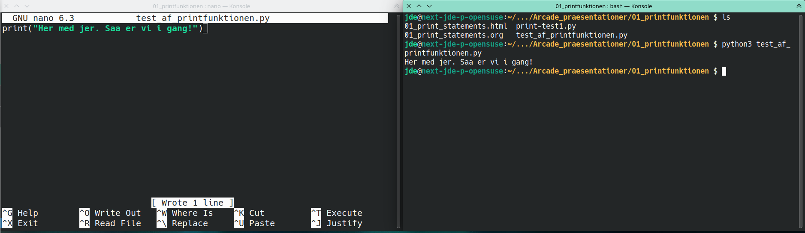
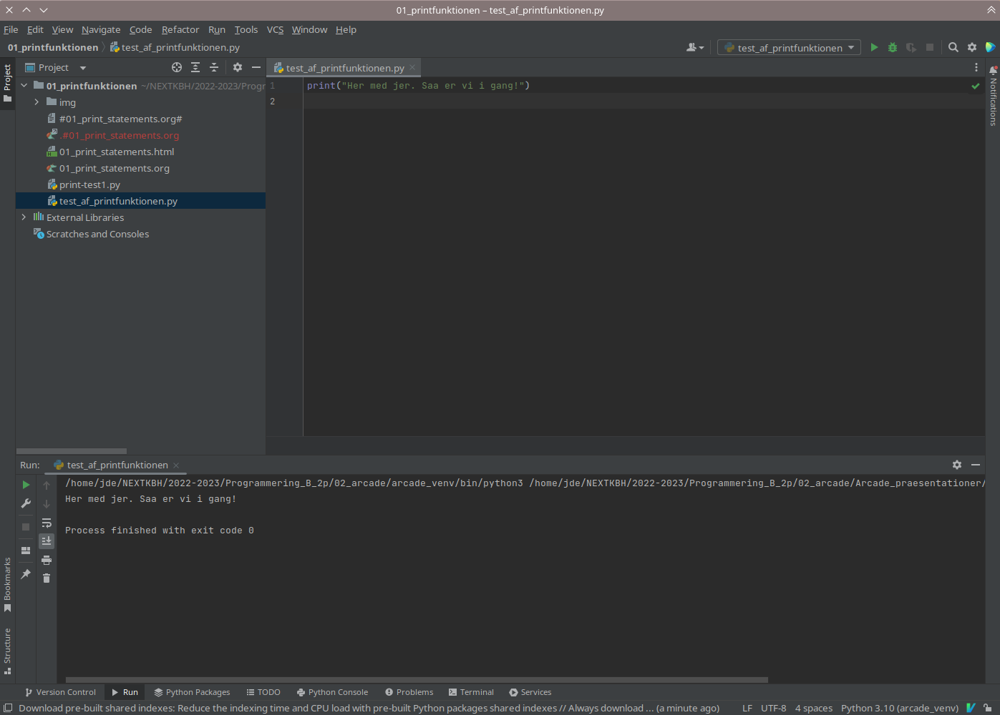

Print-funktionen
Jeres første simple programmer
Indhold
Indledning
Denne præsentation er et destillat af indholdet på https://learn.arcade.academy/en/latest/chapters/04_print_statement/print_statement.html#.
I kan følge med i præsentationen på github, hvis I ikke allerede har den åben. Det er blot tale om en almindelig org-fil.
IDE eller editor + bash?
For at kunne eksekvere/køre python-programmer, skal man bruge enten sit favorit-IDE (pycharm, vs-code, etc) eller sin favorit-editor (emacs, vim, nano, notepad++, etc) samt en kommandoprompt/terminal (cmd, powershell, git-bash).
Jeg bruger selv emacs til det hele, men jeg vil opfordre jer til at bruge pycharm, hvis I er i tvivl. Man kan dog komme langt med to terminaler åbne, hvor den ene terminal bruges til at åbne nano eller lignende editor, mens den anden terminal bruges til at køre selve programmet.
Eksempel med nano og en terminal

Eksempel med pycharm

Print-funktionen
Printfunktionen er som navnet antyger en funktion. I kender funktioner fra matematik allerede.
I matematik kan man f.eks. have
sin(x)
hvor sin er funktionsnavnet og x er argumentet eller parameteren. De samme benævnelser gælder i Programmering.
I matematik er man yderligere sikker på, at der altid kommer en y-værdi ud, når man indsætter en x-værdi, og man er sikker på, at der kun er én y-værdi for hver x-værdi.
I programmering er situationen ikke altid sådan. I sprog som python, behøver en funktion ikke altid at have en parameter, ej heller behøver der at være en returværdi. Ydermere kan funktioner i python programmeres til at have sideeffekter. Funktioner har altså mulighed for ændre på sine omgivelser, hvis man programmere det ind.
I deciderede funktionelle sprog, som f.eks. clojure, haskell, skal funktioner altid have en returværdi, og funktionerne må ikke have sideffekter. Dette kan til dels også implementeres i python, men ikke i samme grad som i de rene funktionelle sprog.
En af de første simple funktioner man bliver introduceret til i python er print-funktionen, som printer tekst til terminalen.
print("Hej med jer. Jeg kan mærke, at det blive megafedt at have programmering med jer!")
Hej med jer. Jeg kan mærke, at det blive megafedt at have programmering med jer!
print er funktionsnavnet mens tekststrengen er parameteren. I python angives tekststrenge med enten " eller '.
Nu er det jeres tur
I skal:
- oprette en ny pythonfil. De ender altid med
.py - få programmet til at skrive noget ud til terminalen.
- skrive selve koden i jeres pythonfil.
- eksekvere/køre filen. Brug terminalen (=python3 navnpaajeresfil.py) eller find ud af hvordan man kører en vil i jeres valgte IDE (pycharm etc).
Fejl og advarsler
Fejl får programmet til ikke at kunne køre, mens programmet godt kan køre, selvom der er advarsler, men der er noget, som ikke er optimalt.
Fejl
Prøv lige at skrive dette ind.
Print("Her er der da ingen fejl")
Kan I finde fejlen?
Forklaring
Print er skrevet med stort P. Python er case sensitive. Der er altså forskel på store og små bogstaver. Den korrekte kode er altså
print("Her er der da ingen fejl")
Husk altid at læse fejlmeddelelsen. Fejltypen og linjenummeret giver ofte hints til, hvad problemet er.
Advarsler
Nu prøver vi lige et andet eksempel
print ("Hello World!")
Programmet kører uden problemer, og hvis man "bare" bruger en editor og en terminal, ser man ingen problemer.
Hvis derimod anvender et IDE a la pycharm vil man få advarsler, som denne:

Det er ikke en fejl, men den stilmæssige rigtige måde at skrive det på, er uden et mellemrum mellem funktionsnavnet og parenteserne til parametrene. PEP-8 er den officielle style guide til python.
Hvis I vil følge PEP-8 til punkt og prikke, så skal I altid sørge for at der er præcis én blank linje til sidst i alle pythonfiler.
Hvis I følge alle anvisninger fra PEP-8, når de kommer frem i pycharm eller lignende, så lærer I hurtigere at skrive "pæne" pythonprogrammer.
Print flere linjer
Man kan printe lige så mange linjer, som man vil. Det nemmeste er kalde print-funktionen flere gange.
print("I\'ve got no strings") print("To hold me down") print("To make me fret") print("Or make me frown") print("I had strings") print("But now I\'m free") print("There are no strings on me\n") print("Hi-ho the me-ri-o") print("That\'s the only way to go") print("I want the world to know") print("Nothing ever worries me")
Hvert fald af print resulterer også i en ny linje.
Men er der andet I lægger mærke til?
Escape codes
Hvad skal man gøre, hvis man gerne vil skrive " inde i selve strengen? Ja, så skal man bruge escape codes. I python begynder escape codes med \. Her er en liste:
| Escape code | forklaring |
|---|---|
| \' | Enkeltcitationstegn |
| \" | Dobbeltcitationstegn |
| \t | tab (længere mellemrum en space) |
| \n | ny linje (linefeed LF) |
Pinocchio omskrevet
print("I\'ve got no strings\nTo hold me down\nTo make me fret\nOr make me frown\nI had strings\nBut now I\'m free\nThere are no strings on me\n\nHi-ho the me-ri-o\nThat\'s the only way to go\nI want the world to know\nNothing ever worries me")
Bare fordi man kan, er det ikke altid en god idé. Man mange flere korte print-statements at foretrække frem for én lang.
Triple quotes
Man kan også anvende triple quotes, men lad være! De er beregnet til docstrings (dokumentation af funktioner, klasse osv).
Her får I dem dog alligevel:
print("""I\'ve got no strings To hold me down To make me fret Or make me frown I had strings But now I\'m free There are no strings on me\n Hi-ho the me-ri-o That\'s the only way to go I want the world to know Nothing ever worries me""")
Dette ser måske bedre ud i editoren…
print("""I\'ve got no strings To hold me down To make me fret Or make me frown I had strings But now I\'m free There are no strings on me\n Hi-ho the me-ri-o That\'s the only way to go I want the world to know Nothing ever worries me""")
Men outputtet ser galt ud!
Jeres første opgave med python
Følg linket til jeres første opgave med python:
https://classroom.github.com/a/_g8EyUgY
Opgaven hedder: Arcade Opgave 01 Første program
Her er der igen tale om et git-repo, som I skal klone til jeres lokale maskine et sted på jeres computer, som I kan finde igen. Typisk i en mappe til programmering under skole eller lignende.
I skal følge vejledningen i filen READEME.org
I skal uploade jeres besvarelse ved at committe og pushe til jeres git-repo.
Logbog
Til sidst skal I selvfølgelig sørge for at updatere jeres logbog. Skriv det ned, som I lærte i dag.